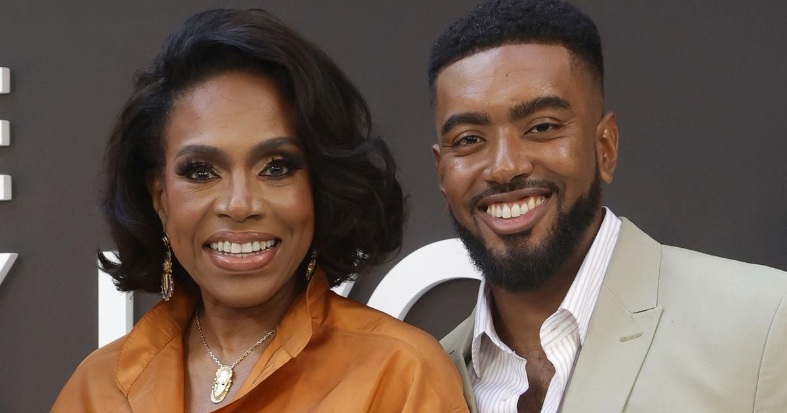

Sheryl Lee Ralph 'collapsed' after her son was shot 3 times(CNN) — Sheryl Lee Ralph has had some terrifying moments with her son. The "Abbott Elementary" star talked to AARP magazine about her career and parenthood as the mother to son Etienne Maurice, 31, and daughter Ivy Coco, 28. "When Etienne was in college, he had a car accident and suffered a concussion. It changed his whole brain," Ralph told the publication. "Then he got mugged, and they shot him three times," she said. "He woke up in the hospital with two bullets in his leg and a wound in his forehead where a bullet had grazed him." The Emmy-winning actress added "When I heard he'd been shot, I collapsed and dropped the phone." "I didn't even listen to the rest. But they didn't kill him, thank God," she said. "Now he runs his own production company and nonprofit, WalkGoodLA, which is centered around healing, mental health and overall well-being." On Tuesday, her son posted a video on his verified Instagram account to make people aware that the accident and shooting "happened nine or 10 years ago" and that he's fine now. "Never had to do anything like this but I had to come on here after a few worried phone calls," Etienne Maurice, who recently got engaged, posted. "I've been pretty honest and open about my journey towards healing, and hopefully my story of trauma to triumph will help somebody. Thank you all for the love, but I am OK!" for more features. |
 |